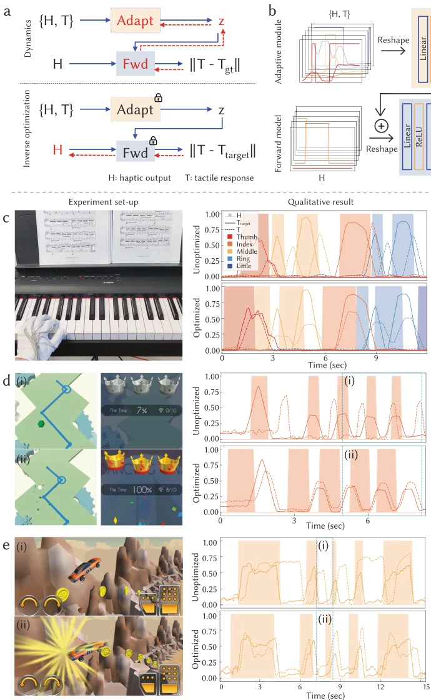

Fig. 2 | Performance of embroidered vibrotactile haptics and resistive tactile sensors. a Photograph on a typical embroidered magnetic coil showcasing inner and outer radii (rin and rout) and the pitch (p) of neighboring coil winds. b Simulation demonstrating magnetic flux at the cross-section when subjected to a 1 A input current. c Comparison of normalized simulated and experimentally measured magnetic flux from embroidered coils with varying gauge numbers of magnetic wire at different heights. Error bars indicate the standard deviations (SD) across measurements. d Illustration of the characterization setup for a single vibrotactile unit with radius r, with a foam spacer providing base height anchoring
方法Method
整体流程分为硬件制造与算法优化两部分。硬件上，利用数字刺绣机将压阻传感器和振动马达无缝嵌入纺织品，实现模块化定制。传感器采用压阻层夹在导电纱线电极间，振动单元由线圈和永磁体组成，通过 PWM 控制频率和幅度。算法核心是自适应优化管道，包含前向动力学模型与逆优化过程。前向模型学习用户如何响应震动，输入 H 预测 T。自适应模块通过少量数据提取用户特征向量 z，解决个体差异。逆优化利用梯度下降调整 H，使预测 T 逼近目标 T_target。该管道支持少样本适应，仅需 15 秒数据即可为新用户建模，无需手动校准。系统通过矩阵化布线减少连线，支持多路复用驱动，确保硬件可扩展性与算法灵活性相结合，实现从感知到反馈的闭环控制。
—

Fig. 4 | Adaptive transfer of tactile interactions across users. a An overview of human model learning and inverse haptics optimization pipeline. The pipeline incorporates a forward dynamics model with an adaptive module and an inverse optimization procedure. The vibrotactile haptic output is denoted as H, and the tactile response as T. Backward propagation is represented by the red dashed arrows. b Illustration of the forward model featuring an adaptive module. Using our
Fig. 5 | Transfer of tactile information from robot to human for teleoperation. a Overview of the teleoperation setup, featuring a parallel gripper equipped with tactile sensors (i) and a user wearing a full-sized glove integrated with vibrotactile units on the thumb and index finger (ii). The visual system tracks embroidered green and red color blocks for distance measurement purposes. b Teleoperated grasping of a hot dog bun, Hawaiian bread, and a soft plastic box without visual feedback and with optional tactile information transferring through haptic feed- back. The plots show the synchronized distance measurement of users' finger